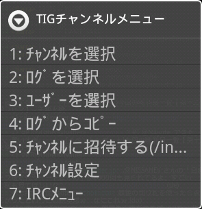
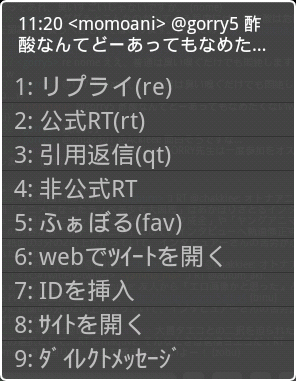
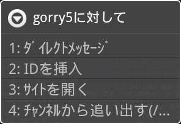
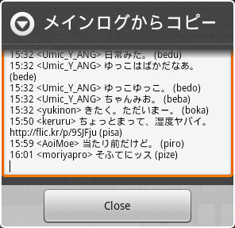
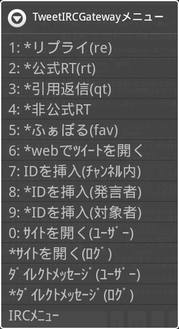

TIGモードは、TweetIRCGateway(TIG)による「Twitterとの中継を行うIRCサーバ」に接続するときに使用するモードです。
「サーバ設定」で、[TweetIRCGatewayコマンドを使用する]がONになっていると、そのサーバ内で作られるチャンネルはTIGモードとなります。
TIGモードでは、操作メニューやチャンネルの動作がTweetIRCGateway用に最適化されます。
長押しメニュー

TIGチャンネルメニュー
TIGチャンネルメニュー
TIGモードでは、メインログウィンドウを長押し（ロングタップ）すると、「TIGチャンネルメニュー」が表示されます。メインログウィンドウでTIGモードのチャンネルを開いているときは、サブログウィンドウを長押し（ロングタップ）しても同じメニューが開きます。
- チャンネルを選択
-
チャンネルの一覧がダイアログで表示され、選択したチャンネルへ移動します。
- ログを選択
-

選択したログに対するメニューログの各行がリスト形式で表示され、選択した行（ツイート）に対して操作を行います。行を長押し（ロングタップ）で選択すると、以下の操作のショートカットとなります。メインログ 選択したツイートに対するリプライ(re) サブログ 選択したツイートが行われたチャンネルへ移動 - リプライ(re)
-
選択したツイートに返信するコマンドが入力エリアに挿入されます。TIGのreコマンドに相当します。
- 公式RT(rt)
-
選択したツイートを公式リツイートするコマンドが入力エリアに挿入されます。TIGのrtコマンドに相当します。
- 引用返信(qt)
-
選択したツイートを引用して返信するコマンドが入力エリアに挿入されます。TIGのqtコマンドに相当します。
- 非公式RT
-
選択したツイートを古い形式でリツイートするコマンドが入力エリアに挿入されます。「非公式RT」はTIG本体ではなくプラグインで実装されている機能のため、プラグインの種類によってはコマンドが異なることがあります。AiCiAの初期設定では「mrt」というコマンド名になっていますが、変更したいときは「設定」メニューを使用します。
- ふぁぼる(fav)
-
選択したツイートに「Favorite」を付けるコマンドが入力エリアに挿入されます。TIGのfavコマンドに相当します。
- webでツイートを開く
-
選択したツイートをwebブラウザで開きます。TIGのuコマンドに相当します。
- IDを挿入
-
選択したツイートの発言者IDが入力エリアに挿入されます。ツイート内に他ユーザーのIDがある時は、それらのIDも挿入されます。
- サイトを開く
-
選択したツイートの発言者のTwitterサイトをブラウザで開きます。TIGのhコマンドに相当します。
- ダイレクトメッセージ
-
選択したツイートの発言者にダイレクトメッセージ(DM)を送るためのトークチャンネルを開きます。トークチャンネルで発言することで、ダイレクトメッセージとして相手に送信することができます。他ユーザーから自分にダイレクトメッセージが届くと、送信相手とのトークチャンネルが開き、メッセージはその中で相手の発言として読むことができます。そのままそのチャンネルで発言することで、ダイレクトメッセージによる返信を送ることができます。
- ユーザーを選択
-

選択したユーザーに対するメニューチャンネルに所属しているユーザーの一覧がリストで表示され、選択したユーザーに対して作業をします。- ダイレクトメッセージ
-
選択したユーザーにダイレクトメッセージ(DM)を送るためのトークチャンネルを開きます。トークチャンネルで発言することで、ダイレクトメッセージとして相手に送信することができます。他ユーザーから自分にダイレクトメッセージが届くと、送信相手とのトークチャンネルが開き、メッセージはその中で相手の発言として読むことができます。そのままそのチャンネルで発言することで、ダイレクトメッセージによる返信を送ることができます。
- IDを挿入
-
選択したユーザーのIDが入力エリアに挿入されます。
- サイトを開く
-
選択したユーザーのTwitterサイトをブラウザで開きます。TIGのhコマンドに相当します。
- チャンネルから追い出す(/kick)
-
選択したユーザーをチャンネルから追い出します。入力エリアで「/kick [ユーザー名] [追い出す理由]」と入力しても、同じ結果が得られます。TIG上で「ユーザーをチャンネルからkickする」ことは、「TIG上のローカルユーザーリストからそのユーザーを削除する」ことを意味します。Twitterアカウント上で何かが行われることはありません。
- ログからコピー
-

メインログからコピーログウィンドウのテキストをコピーして、クリップボードに入れることができます。メインログウィンドウを長押し（ロングタップ）したときはメインログ、サブログウィンドウを長押し（ロングタップ）したときはサブログの内容をコピーします。 - チャンネルに招待する(/invite)
-

招待するユーザー指定したユーザーにチャンネルに追加します。入力エリアで「/invite [ユーザー名]」と入力しても、同じ結果が得られます。TIG上で「ユーザーをチャンネルにinviteする」ことは、「TIG上のローカルユーザーリストにそのユーザーを追加する」ことを意味します。Twitterアカウント上で何かが行われることはありません。 - チャンネル設定
-
現在メインログウィンドウで表示しているチャンネルの動作設定を行います。
-
IRCチャンネル用のメニューを表示します。[トピックの変更]が必要な場合などに使用します。
[U]ボタンメニュー

TIGメニュー
TIGメニュー
TIGCモードでは、[U]ボタンをタップしたときに「TweetIRCGatewayメニュー」が表示されます。メインメニューから[その他]-[[U]ボタン]を選んでも同様です。
|
IRCモードで動作している場合、またはTIGモードでも[U]ボタンを長押し（ロングタップ）すると、IRCメニューが表示されます。
|
- リプライ(re)
-
メインログから選択したツイートに返信するコマンドが入力エリアに挿入されます。TIGのreコマンドに相当します。メニューを長押し（ロングタップ）で選択すると、ツイートをサブログから選択することができます。
- 公式RT(rt)
-
選択したツイートを公式リツイートするコマンドが入力エリアに挿入されます。TIGのrtコマンドに相当します。メニューを長押し（ロングタップ）で選択すると、ツイートをサブログから選択することができます。
- 引用返信(qt)
-
選択したツイートを引用して返信するコマンドが入力エリアに挿入されます。TIGのqtコマンドに相当します。メニューを長押し（ロングタップ）で選択すると、ツイートをサブログから選択することができます。
- 非公式RT
-
選択したツイートを古い形式でリツイートするコマンドが入力エリアに挿入されます。メニューを長押し（ロングタップ）で選択すると、ツイートをサブログから選択することができます。「非公式RT」はTIG本体ではなくプラグインで実装されている機能のため、プラグインの種類によってはコマンドが異なることがあります。AiCiAの初期設定では「mrt」というコマンド名になっていますが、変更したいときは「設定」メニューを使用します。
- ふぁぼる(fav)
-
選択したツイートに「Favorite」を付けるコマンドが入力エリアに挿入されます。TIGのfavコマンドに相当します。メニューを長押し（ロングタップ）で選択すると、ツイートをサブログから選択することができます。
- webでツイートを開く
-
選択したツイートをwebブラウザで開きます。TIGのuコマンドに相当します。メニューを長押し（ロングタップ）で選択すると、ツイートをサブログから選択することができます。
- IDを挿入（チャンネル内）
-
選択したユーザーのIDが入力エリアに挿入されます。
- IDを挿入（発言者）
-
選択したツイートの発言者IDが入力エリアに挿入されます。メニューを長押し（ロングタップ）で選択すると、ツイートをサブログから選択することができます。
- IDを挿入（対象者）
-
選択したツイートの発言者IDが入力エリアに挿入されます。ツイート内に他ユーザーのIDがある時は、それらのIDも挿入されます。メニューを長押し（ロングタップ）で選択すると、ツイートをサブログから選択することができます。
- サイトを開く（ユーザー）
-
選択したユーザーのTwitterサイトをブラウザで開きます。TIGのhコマンドに相当します。
- サイトを開く（ログ）
-
選択したツイートの発言者のTwitterサイトをブラウザで開きます。メニューを長押し（ロングタップ）で選択すると、ツイートをサブログから選択することができます。
- ダイレクトメッセージ（ユーザー）
-
選択したユーザーにダイレクトメッセージ(DM)を送るためのトークチャンネルを開きます。トークチャンネルで発言することで、ダイレクトメッセージとして相手に送信することができます。他ユーザーから自分にダイレクトメッセージが届くと、送信相手とのトークチャンネルが開き、メッセージはその中で相手の発言として読むことができます。そのままそのチャンネルで発言することで、ダイレクトメッセージによる返信を送ることができます。
- ダイレクトメッセージ
-
選択したツイートの発言者にダイレクトメッセージ(DM)を送るためのトークチャンネルを開きます。トークチャンネルで発言することで、ダイレクトメッセージとして相手に送信することができます。メニューを長押し（ロングタップ）で選択すると、ツイートをサブログから選択することができます。他ユーザーから自分にダイレクトメッセージが届くと、送信相手とのトークチャンネルが開き、メッセージはその中で相手の発言として読むことができます。そのままそのチャンネルで発言することで、ダイレクトメッセージによる返信を送ることができます。
-
IRCチャンネル用のメニューを表示します。[トピックの変更]が必要な場合などに使用します。